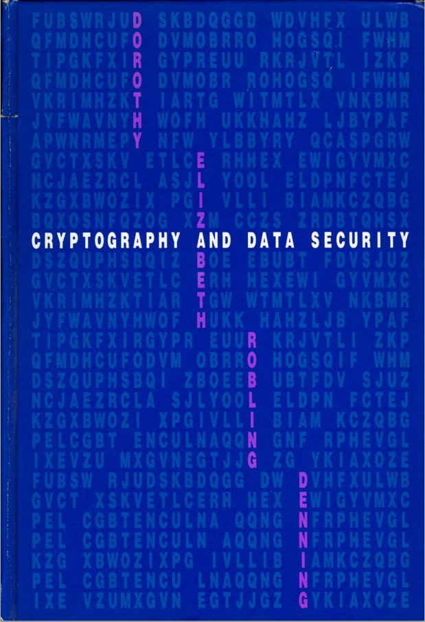

Summary
As the technology and functionality of computers has evolved, we have come to rely on these systems at a rapidly increasing rate. But along with the benefits that computers provide, we also must be cautious about the protection and security of the data they store. That is why the book by Dorothy Elizabeth Roblin Denning, Cryptography and Data Security, is of the upmost importance. It discusses the mathematical principals behind data security and demonstrates how these principals are applicable to modern computers. Additionally, it gives a technical overview of cryptography by diving into the concepts of public-key encryption, digital signatures, Data Encryption Standard, key safeguarding schemes, and key distribution protocols. Cryptography and Data Security provides the reader with a solid foundation of the key concepts behind data security and cryptography as well as demonstrates its importance.